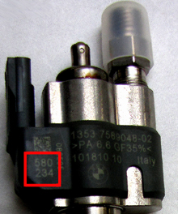

Due to tolerances when manufacturing the injectors the actual injected fuel quantity may deviate minimally from the calculated fuel quantity. After manufacturing these deviations are established and two adjustment values are developed for each injector. With these adjustment values the engine control module corrects the calculated injection quantity and thus improves exhaust emissions. With this function the installed injectors' two adjustment can be changed or stored again in the engine control unit.
If an injector has been replaced you have to check that the marked adjustment value on the injector matches the value stored for that cylinder in the engine control unit.
If the engine control unit has been replaced an injector quantity adjustment must be performed for all cylinders so that all installed injectors' adjustment values are stored in the new control unit. If this is not done it may lead to rough engine running or the engine not starting at all.
Every injector is marked with the adjustment value in two blocks of three digits. The marking may be located in two places, either on the injector's plastic casing or on the top part made of metal.
 |
The figure shows an example of an injector with the adjustment value marked on the plastic casing.
If the adjustment values cannot be read off when the injector is installed it must be removed. The seals must be replaced before reinstalling the injector.
Note:
Due to recalculations in the engine control unit, the adjustment values may deviate slightly for the last digit after the new values have been saved. There is no entry error or or control unit failure.
Test conditions:
Ignition on, engine off.
No faults in the system.
Read off the adjustment value on the injector.
Procedure:
Start the function.
Stored values for all cylinders are shown. If any value should be changed, press "YES".
Select on which cylinder the value should be changed, enter the new value and press "OK" to save.
Values for all cylinders are shown again. Check that the new value for the selected cylinder is saved.
If no other values should be changed, select "NO" to exit the function.
The function is done.
If the function fails, check the test conditions and repair any faults.